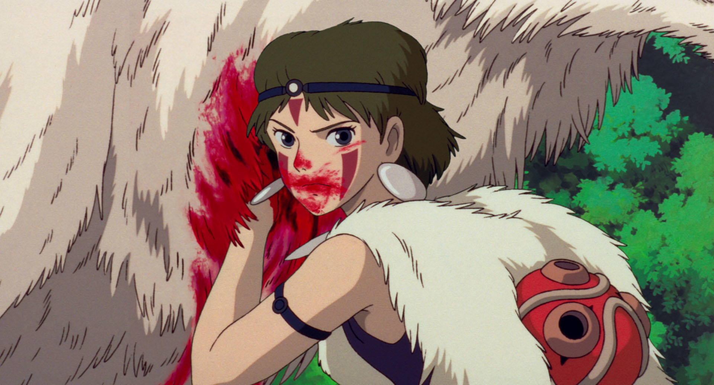

Princess Mononoke (Japanese: もののけ姫, Hepburn: Mononoke-hime) is a 1997 Japanese epic fantasy film written and directed by Hayao Miyazaki, animated by Studio Ghibli for Tokuma Shoten, Nippon Television Network and Dentsu, and distributed by Toho. The film stars the voices of Yōji Matsuda, Yuriko Ishida, Yūko Tanaka, Kaoru Kobayashi, Masahiko Nishimura, Tsunehiko Kamijo, Akihiro Miwa, Mitsuko Mori and Hisaya Morishige. Princess Mononoke is set in the late Muromachi period of Japan (approximately 1336 to 1573 CE), but it includes fantasy elements. The story follows a young Emishi prince named Ashitaka, and his involvement in a struggle between the gods of a forest and the humans who consume its resources. The term Mononoke (物の怪), or もののけ, is not a name, but a Japanese word for supernatural, shape-shifting beings that possess people and cause suffering, disease, or death.
The film was released in Japan on July 12, 1997, and in the United States on October 29, 1999. It was a critical and commercial blockbuster, becoming the highest-grossing film in Japan of 1997, and also held Japan's box office record for domestic films until 2001's Spirited Away, another Miyazaki film. It was dubbed into English with a script by Neil Gaiman, and initially distributed in North America by Miramax, where it sold well on DVD and video, despite a poor box office performance; however, it greatly increased Ghibli's popularity and influence outside Japan.